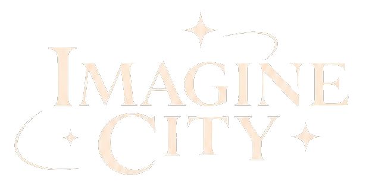
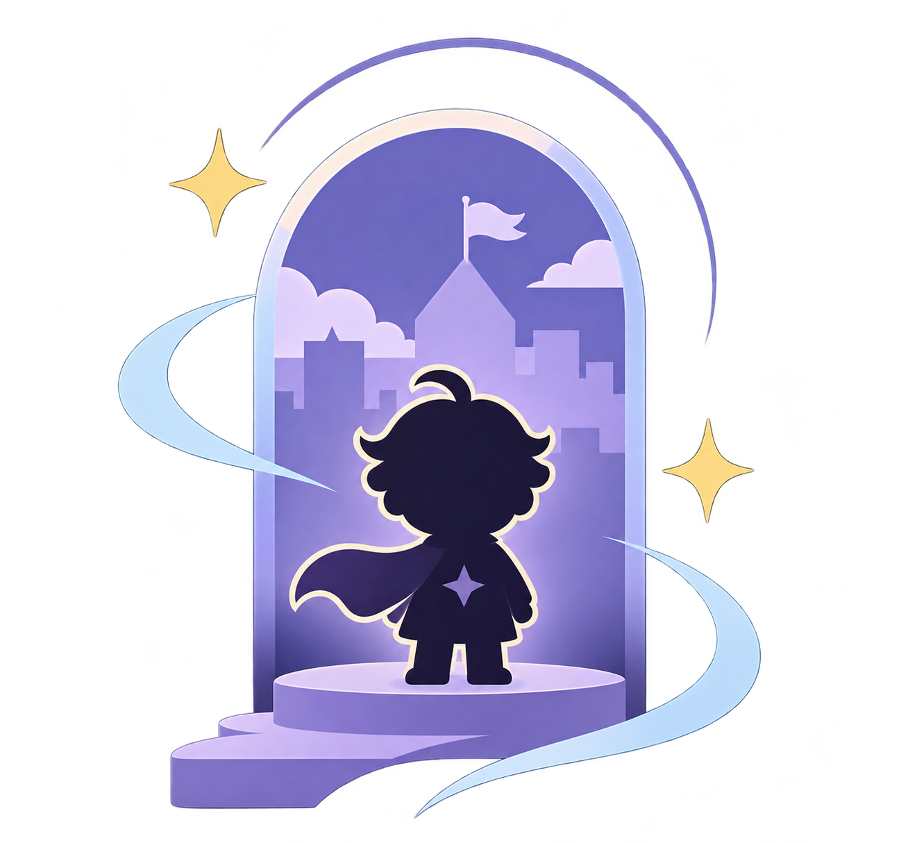
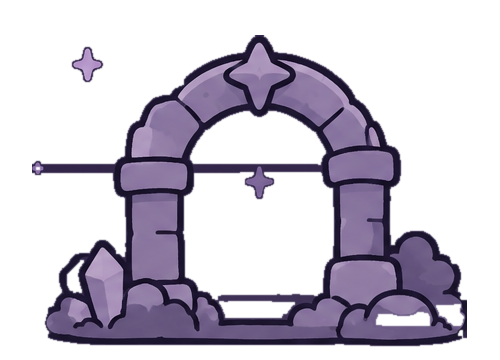

เปิดเผยตัวตน
ตัวตนของคุณ
สาขาที่แนะนำ


ออกเดินทางเพื่อค้นหาคำตอบ
และนำสีสันกลับคืนมา
ครั้งหนึ่ง Imagine City
เคยเป็นเมืองที่เต็มไปด้วย
สีสันและเวทมนตร์
แต่วันหนึ่ง สีสันทั่วทั้งเมือง
กลับค่อย ๆ จางหายไปอย่างลึกลับ...
ตลอดการผจญภัย
คุณจะได้พบกับสถานการณ์ต่าง ๆ
เลือกคำตอบที่ตรงกับตัวคุณที่สุด
ทุกการตัดสินใจจะช่วยคืนสีสันให้เมือง
เมื่อการเดินทางสิ้นสุดลง
ตัวตนที่แท้จริงของคุณจะถูกเปิดเผย
บทที่ 1
ประตูเวทมนตร์เปิดออก คุณก้าวเข้าสู่เมืองที่สีสันเลือนหาย

บทที่ 1 · เสียงเรียกจากเมือง
เลือกคำตอบเพื่อเดินทางต่อ
บทที่ 1 · เสียงเรียกจากเมือง
เลือกคำตอบเพื่อเดินทางต่อ
บทที่ 1 · เสียงเรียกจากเมือง
เลือกคำตอบเพื่อเดินทางต่อ
แสงสีเล็ก ๆ เริ่มปรากฏบนเส้นทาง
บทที่ 2
แสงริบหรี่พาคุณไปยังตรอกที่เต็มไปด้วยปริศนา
บทที่ 2 · ตรอกแห่งเงา
เลือกคำตอบเพื่อเดินทางต่อ
บทที่ 2 · ตรอกแห่งเงา
เลือกคำตอบเพื่อเดินทางต่อ
ตรอกมืดเผยสีม่วงอ่อนที่เคยหายไป
บทที่ 3
เศษสีบางส่วนกลับมา และความทรงจำของเมืองเริ่มตื่นขึ้น
บทที่ 3 · เขตแห่งความทรงจำ
เลือกคำตอบเพื่อเดินทางต่อ
บทที่ 3 · เขตแห่งความทรงจำ
เลือกคำตอบเพื่อเดินทางต่อ
สีของหลังคาและหน้าต่างค่อย ๆ กลับคืน
บทที่ 4
บนยอดหอคอยยังมีประกายสีสุดท้ายหลงเหลือ
บทที่ 4 · หอคอยแห่งแสง
เลือกคำตอบเพื่อเดินทางต่อ
บทที่ 4 · หอคอยแห่งแสง
เลือกคำตอบเพื่อเดินทางต่อ
ทั้งเมืองเริ่มส่องประกายอีกครั้ง
บทที่ 5
ถึงเวลาตัดสินใจว่าแสงของเมืองจะกลับมาอย่างไร
บทที่ 5 · หัวใจของเมือง
เลือกคำตอบเพื่อเดินทางต่อ
บทที่ 5 · หัวใจของเมือง
เลือกคำตอบเพื่อเดินทางต่อ
ประตูสุดท้าย
ก่อนเผยตัวตนที่แท้จริง ฝากบอกเรื่องราวของคุณอีกสักนิด
กรอกเท่าที่สะดวกได้เลย ข้อไหนไม่อยากตอบก็ข้ามได้
เปิดเผยตัวตน
สาขาที่แนะนำ